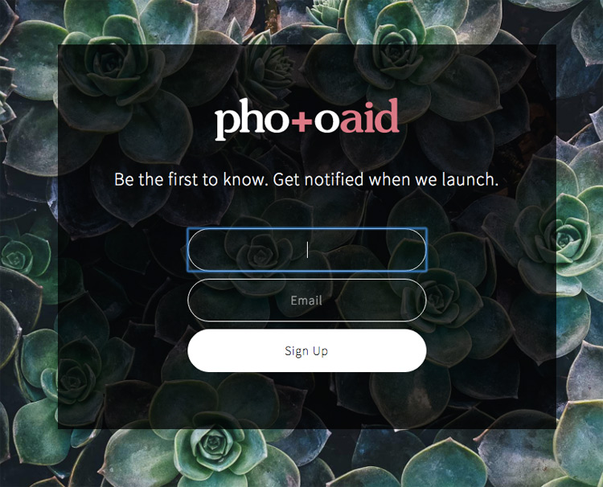
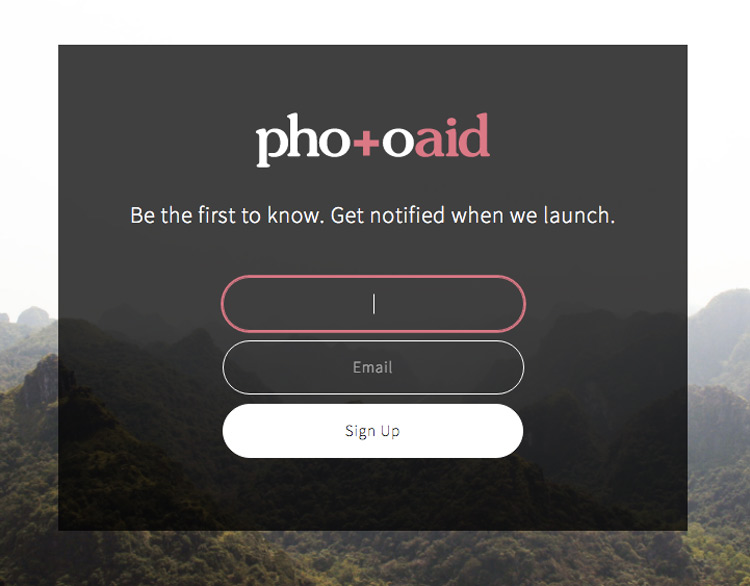

input:focus,
select:focus,
textarea:focus {
outline: none;
box-shadow: 0 0 0 2px rgba(232, 106, 129, 1);
border: 1px solid rgba(232, 106, 129, 1);
transition: all 0.3s ease;
}
Note: Using box-shadow to replicate border: 2px is preferable to prevent jumping of input fields up and down 1px as they come in and out of focus.
It's obviously important to replace input:focus { outline: none; } with a clear custom signifier for usability.
Before:

After:
